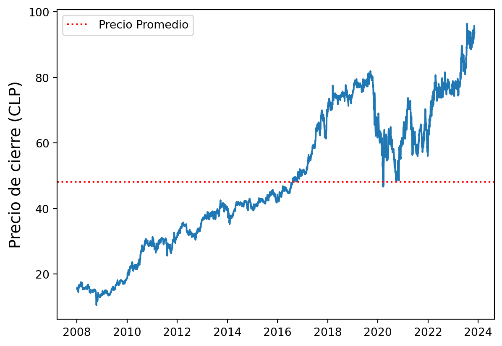
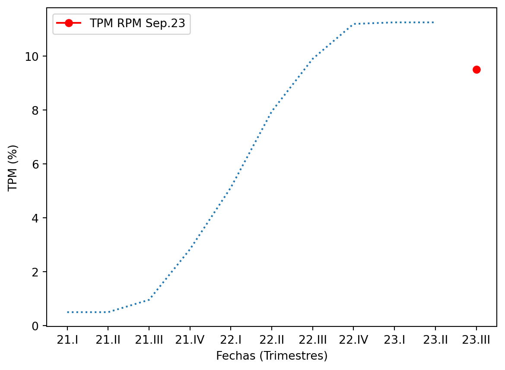
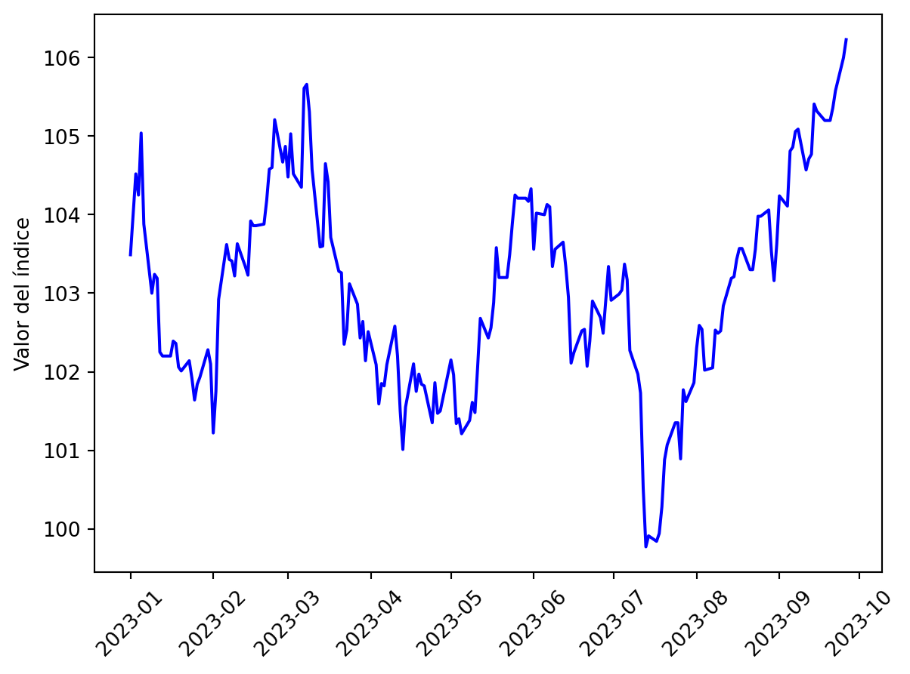
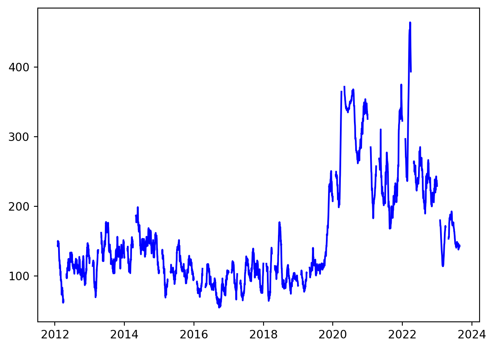
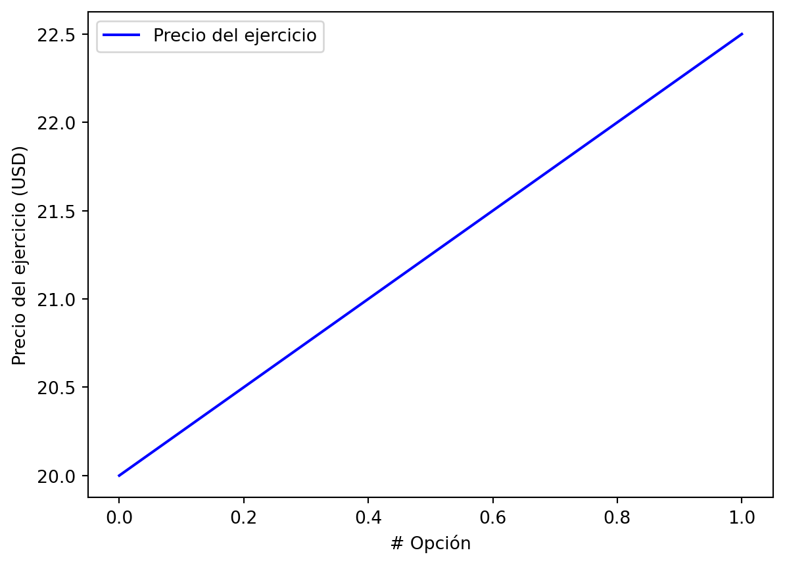

Proyecto Gestión Financiera
1 Descripción Activo y Contexto
1.1 Definición
El sector de estudio en este caso particular corresponde al sector bancario. Este último incluye a todas las instituciones financieras conocidas como “bancos” que ayudan a las personas guardar su dinero. Los bancos le ofrecen la oportunidad a las personas de abrir cuentas para el propósito que necesiten, ya sea de ahorro o para inversión. Los servicios principales que ofrecen estas instituciones incluyen almacenaje, transferencia, extender crédito o el manejo de riesgos asociados a mantener diversos niveles de riqueza. Esta industria es una que es sustentable en el tiempo, de hecho, según un estudio por (Isnurhadi et al. 2022) que revisa diferentes factores que afectan al crecimiento sustentable de la industria bancaria, es que esta última logra mantener un crecimiento sustentable a pesar de estar expuesta a muchos factores de riesgo.
El activo a estudiar corresponde a la acción del Banco de Chile. Este es uno de los bancos comerciales más grandes del país. Al igual que otros bancos en el país, ofrece una gran variedad de productos bancarios y servicios financieros, dentro de los cuales están banca en línea, servicios de inversión y portales internacionales de negocio. El objetivo de dichas soluciones financieras es lograr satisfacer las necesidades de los clientes en cualquier etapa de la vida de estos.
En el siguiente gráfico se observa la evolución del precio de la acción en la Bolsa de Santiago.
| Periodo | Rentabilidad |
|---|---|
| Mes actual | -3.06% |
| Mes anterior | -0.43% |
| Año actual (YTD) | 14.04% |
| Año anterior | 32.21% |
1.2 Motivación
Las instituciones financieras llevan a cabo funciones muy importantes en la economía tales como: mecanismos de pagos, juntan la oferta con la demanda en los mercados financieros, manejan instrumentos financieros complejos, entre otros (Anbar y Alper 2011). De estas entidades, los bancos son las más importantes en muchas economías. Esto último ya que como intermediario financieros, proveen un conjunto diverso de servicios, y la eficiencia de este proceso de intermediación puede afectar al crecimiento económico. De hecho, la insolvencia de un banco puede tener efectos muy negativos para el sistema financiero de un país, como causar una crisis bancaria, que corresponde a la quiebra subsecuente de otros bancos comerciales debido a problemas de liquidez.
Si bien la motivación por la cual se escogió este activo se respalda por razones no numéricas, los números presentados en la sección anterior de definición de activo ayudaron un poco a la elección. Esto último ya que los retornos de la acción desde inicio de año hasta la fecha (YTD) fueron muy positivos, al igual que los retornos del año anterior.
1.3 Contexto
Las tres variables/activos que se definirán en esta sección corresponden a la TPM que define el Banco central de Chile, el DXY (US Dollar Index) y el DEPUC (Índice de Incertidumbre Económica y Política).
1.3.1 TPM
Para la Tasa de Política Monetaria, esta corresponde a la tasa a la que el Banco Central del Chile le presta capital a los bancos comerciales del país («Política Monetaria» 2023). Por lo tanto, si esta tiene valores altos los bancos reciben un mayor interés en sus depósitos, por ende, tienen más incentivos para entregar a sus clientes mejores tasas de interés en instrumentos financieros de ahorro, como por ejemplo, depósitos a plazo. Pero, por otro lado, se encarece la prestación de fondos, lo cual afecta a las tasas de interés de los créditos. Luego, los factores mencionados corresponden a formas en las que la TPM puede afectar al Banco de Chile.

El gráfico ilustra la trayectoria de la Tasa de Política Monetaria (TPM) a lo largo de los distintos trimestres. Se destaca el punto rojo, que representa la TPM correspondiente a septiembre, derivada de la última reunión de política monetaria. A través del gráfico, se puede apreciar que la tasa mantuvo niveles elevados durante un período, pero recientemente ha iniciado una tendencia descendente, la cual probablemente va a continuar en los próximos meses, debido a los comunicados que ha hecho el Banco Central (B. C. de Chile 2023).
1.3.2 DXY
Luego, con respecto al DXY, es una medida del valor del dólar americano con respecto a una canasta de divisas foráneas («What is the Dollar Index?» 2023). El valor de este índice puede afectar al sector bancario o particularmente al Banco de Chile, debido a que uno de los objetivos que tiene el Banco Central es controlar el tipo de cambio, ya que este último afecta a la inflación. Por lo que si el valor del índice se encuentra alto, es decir que el dolar se valorizado con respecto a otras divisas, probablemente el Banco Central se enfocará en una política monetaria más restrictiva, subiendo la TPM, la cual se mencionó cómo afecta a los bancos comerciales.

En este último gráfico se aprecia el cambio del índice desde principio de año hasta la fecha.
1.3.3 DEPUC
Por último, el DEPUC, es una medida general de percepción e incertidumbre económica que se construye a partir de la frecuencia de tweets que contienen palabras relacionadas con la economía general, acciones políticas, incertidumbre o coyuntura inicial, publicadas diariamente por diversas cuentas («Un índice de incertidumbre político-económica basado en Twitter» 2023). Entonces, en base a esto, el valor que toma esta medida puede afectar al Banco en múltiples áreas tales como: asignación de créditos, inversiones, entre otros.

En este se puede apreciar la evolución del índice DEPUC en Chile entre los años 2012 y 2023. Un aspecto a destacar es cómo el valor de esta medida comienza a incrementar en el año 2019, lo cual puede ser explicado por la pandemia y el estallido social, ambos, eventos que causaron un gran nivel de incertidumbre en el país. A pesar de esto último, se observa como el índice actualmente se encuentra en niveles pre-pandemia.
1.4 Análisis de Largo Plazo
1.4.1 Caracterización deuda
En lo que respecta a acciones comunes para el caso del Banco de Chile se tiene la acción del mismo que se mencionó con anterioridad en la sección de definición. Particularmente, de acuerdo con (B. de Chile 2023b), las acciones del Banco de Chile se dividen en:
- 13.168.424.178 acciones nominativas.
Que se distribuyen como sigue:
- 4% Acciones serie “A”.
- 77.6% Acciones preferentes serie “B”.
- 3.0% Acciones preferentes serie “D”.
- 8.3% Acciones serie “E”.
Un fenómeno que se puede ver en esta distribución de acciones es el hecho que existen diferentes series. Esto hay que recordar que se suele realizar generalmente con el objetivo de diferenciar el derecho a voto.
Otro detalle es que también existen acciones que se transan en la bolsa de Nueva York, cuyo precio está en dólares. El nemotécnico por el cual transan estas acciones en el NYSE es BCH.
En lo que respecta a bonos, según (B. de Chile 2023a) la entidad realizó una emisión el 12 de junio del presente año, de bonos bajo su nuevo marco de financiamiento sostenible (ESG framework), cuyos recursos se destinaron a emprendimientos liderados por mujeres. Este tipo de prestamos “verdes” se podría clasificar como que tienen una clausula de protección positiva, ya que de cierta forma se especifica una acción que la empresa debe cumplir. Esto último, con el objetivo de mejorar la relación con los acreedores de dicha deuda.
Normalmente, este tipo de bonos suelen tener métricas asociadas cuyo cumplimiento afecta directamente la tasa del bono. Por lo que, se pueden clasificar de cierta forma como bonos de tasa flotante.
1.4.2 Caracterización de emisiones históricas
En lo que respecta a emisiones históricas, el 4 de mayo del año 2011 el Banco de Chile realizó un aumento de capital donde se subastaron 1.398.023.524 acciones de un accionista controlador. Estas acciones fueron ofrecidas a los accionistas del banco y a la Sociedad Matriz del Banco de Chile. Debido a que se ofrecieron a los accionistas del Banco, esta se puede categorizar como una oferta directa de derechos de suscripción.
Para llevar a cabo esta oferta, la junta del Banco acordó la colocación 2.081.685.335 acciones. Esta parte de la emisión corresponde a las etapas de conferencias previas a la suscripción, y presentación y aprobación de registro (Ross et al. 2022). Luego siguen las etapas de fijación del precio de la emisión, oferta pública y venta, y estabilización del mercado. Ahora, como se mencionó anteriormente que esta emisión corresponde a una oferta directa de derechos de suscripción, por lo que para la etapa de oferta pública y venta, las nuevas acciones se ofrecen directamente a los accionistas de la empresa.
1.4.3 Relación con activos derivados
Un derivado relacionado a la acción del Banco de Chile corresponde a los que se transan en la bolsa de Nueva York o NYSE, por sus siglas en inglés («Banco de Chile (BCH) Opciones de la cadena - Yahoo Finanzas» 2023). La evolución del precio del ejercicio de estas opciones se puede ver en el siguiente gráfico.

Cabe destacar que las opciones presentadas en esta sección corresponden opciones de compra o call. Este derivado puede ser de importancia para la acción del banco por varias razones, pero una de ellas es que los volúmenes de compra o venta de estas opciones le puede servir a los inversionistas para posiblemente anticipar futuros movimientos del activo subyacente, que en este caso es la acción.
Un detalle a considerar es que las opciones que se mencionaron se transan en la bolsa de Nueva York, esto da como evidencia lo pequeño que es el mercado de derivados en Chile, ya que al momento de buscar información de estos, no se encontraron resultados.
1.5 Reporte grupal
Para la determinación de los pesos del portafolio compuesto por las acciones del grupo, se buscó calcular el portafolio tangencial. Entonces, con los retornos esperados \(\boldsymbol{\mu}\) y la matriz de covarianza de los activos que componen el portafolio \(\boldsymbol{\Sigma}\), se calcularon los pesos \(\boldsymbol{w}\) de cada activo. El problema de optimización a maximizar fue el siguiente:
\[ \max_{\boldsymbol{w}} \left\{\boldsymbol{\mu} - \delta \boldsymbol{w}^{\intercal}\boldsymbol{\Sigma}\boldsymbol{w} \right\} \] Sujeto a: \[\begin{align} &\sum_{i} w_{i} = 1 &\\ &0\leq w_{i}\leq 1 & \end{align}\]
Si bien no se está maximizando el ratio de Sharpe necesariamente, se penaliza la función objetivo con un grado \(\delta\) a la función objetivo por la varianza del portafolio. Luego, de acuerdo al factor de penalización se puede definir un portafolio con mayor o menor grado de aversión al riesgo, pues mientras mayor sea el factor, más se penalizará la función objetivo en función del riesgo y viceversa.
En este caso, se decidió tomar un perfil de inversión conservador, dada la recesión que vive la economía chilena en la actualidad. También, se decidió que la información a utilizar para calcular los retornos y sus varianzas sería a partir del 2021, con el fin de considerar los últimos efectos de la pandemia y no la pandemia en su totalidad, por ser un evento muy aislado que altera los resultados. También, se consideró este horizonte de información por ser una inversión a corto plazo, y por lo tanto es mejor considerar las situaciones más recientes de los activos que toda la información histórica, pues la información reciente es más representativa.
Con todo esto, fue posible obtener la información de los retornos, definir el grado del factor de penalización y maximizar los retornos en función del riesgo asumido. Así, los resultados de los pesos de cada activo en el portafolio fueron los siguientes:
| Acción | Pesos |
|---|---|
| Banco de Chile | 68.3% |
| Parque Arauco | 10.3% |
| COPEC | 21.4% |
Cuyo rendimiento esperado es de 1.113%.
2 Aplicación de modelos de valoración de opciones y caso aplicado
2.1 Comentarios inciales
Antes de comenzar con las secciones respectivas del hito, es importante mencionar que los códigos relacionados para cada modelo fueron dejados en el jupyter notebook que se encuentra en la carpeta de código. La razón de esto se explicará más adelante.
2.2 Ingesta de datos
Antes de comenzar directamente con los modelos como tal, es importante mencionar que los datos necesarios para utilizar dichos modelos se obtuvieron de la librería de python de («Yahoo Finance» Accessed 2023-10-21). Esta permite el acceso a datos del mercado de una forma útil y simple, además de que ofrece datos recientes.
Algunos de los parámetros importantes a obtener son:
La tasa libre de riesgo.
El precio del ejercicio y tiempo para el vencimiento de la opción cuyo activo subyacente sea la acción del Banco de Chile.
La volatilidad de la acción del Banco de Chile.
Estos se obtuvieron mediante la librería de Yahoo Finance antes mencionada. En lo que respecta a los valores de estos tres parámetros, se utilizaron los que se pueden ver en la siguiente tabla.
| Parámetro | Valor |
|---|---|
| Tasa libre de riesgo | 4,92% |
| Precio del ejercicio | 20 |
| Tiempo para el vencimiento (en años) | 0,49 |
Es importante mencionar que dado que los datos son extraídos de Yahoo Finance es posible que al correr el código nuevamente estos valores cambien.
2.3 Aplicación modelo Black y Scholes
Antes de comenzar con la valorización de la opción cuyo activo subyacente es la acción del Banco de Chile, se presentarán cuáles son los parámetros que este modelo necesita, y la fórmula respectiva. Los parámetros para el modelo son:Luego, la fórmula para el modelo continuo es la siguiente: \[\begin{equation} \label{eq:BS} C(S,t) = S\cdot \Phi(d_1) - K\cdot \exp(-R\cdot T) \cdot \Phi(d_{2})\;, \end{equation}\] donde, \[\begin{align*} d_1 &= \frac{\log\left(\frac{S}{K}\right) + \left(R + \frac{\sigma^2}{2}\right)\cdot t}{\sqrt{\sigma^2 \cdot t}}\;,\\ d_2 &= d_1 - \sqrt{\sigma^2 \cdot t}\;. \end{align*}\] Esta formulación para valuar opciones tiene una serie de supuestos. Estos últimos son condiciones de mercado de carácter ``ideal” para acciones y la opción respectiva (Black y Scholes 1973). A continuación se presenta una lista con los supuestos, donde se pone más énfasis al segundo, debido a que este puede ser un tanto complejo de comprender.
La tasa de interés de corto plazo es conocida y constate en el tiempo.
El precio de la acción sigue un ``ramdom walk” en tiempo continuo con una tasa de variación proporcional al cuadrado del precio de la acción. Luego, la distribución de posibles precios de acciones al final de cualquier intervalo finito es log-normal. La tasa de variación de los retornos de la acción es constante.
En cuanto al ``random walk”, esto implica que los cambios en el precio de la acción son aleatorias y no pueden ser predecidas con información histórica de la misma.
Luego, en cuanto a la proporcionalidad, esto se refiere a que la variabilidad o volatilidad del precio de la acción es constante en el tiempo. Lo cual implica que grandes cambios en el precio son raros, y los cambios pequeños son más comúnes.
Después, en lo que respecta a la distribución, esto significa que el logaritmo de del precio de las acciones siguen una distribución normal.
Por último, el modelo asume que la tasa a la cual los retornos de la acción varían, se mantiene constante en el tiempo. Por ende, si bien el precio de la acción puede cambiar de forma inesperada, la tasa a la cual suceden estos cambios se mantiene estable.
La acción no paga dividendos ni ningún otro tipo de distribuciones.
La opción es ``Europea”, es decir, solo puede ser ejercida en la fecha de vencimiento.
No hay costos de transacción en las compras o ventas de la acción o la opción respectiva.
Es posible pedir prestado cualquier fracción del precio de un activo para comprarlo o venderlo, a una tasa de interés de corto plazo.
No hay penalizaciones asociadas a realizar una venta en corto. Un vendedor que no es dueño de un activo aceptará el precio del activo de un comprador, y llegará a un acuerdo con el mismo en una fecha futura, pagándole un monto equivalente al precio del activo en esa fecha.
Luego, bajo los supuestos mencionados, el valor de una opción dependerá solamente en el precio de la misma y el tiempo, y en las variables que se toman como constantes dadas (Black y Scholes 1973). Para efectos de código, se utilizaron los valores de los parámetros obtenidos en la Sección 2.2. El código como tal no se agregó a este documento, debido a que el largo de ciertas líneas del mismo en algunos casos era tal que no se lograba ver la línea completa, debido a que esta se salía del documento (ver Capítulo 3). Ahora bien, igualmente se presentan los resultados obtenidos, Tabla 2.2, por medio de este modelo, pero hay que tener en cuenta que debido a que los datos son obtenidos del mercado, es probable que al correr nuevamente el código algunos valores sean distintos.
| Precio opción call (Black y Scholes 1973) |
|---|
| 0,136 |
2.4 Modelo adicional para valoración de opciones
Existe una gran variedad de modelos además del que se presenta en (Black y Scholes 1973). Ahora bien, estos suelen ser bastante complejos en cuanto a la formulación, por lo que se escogió una alternativa más simple en comparación a esto últimos. El modelo adicional que se presentará corresponde al uno que tiene un enfoque basado en el método de simulación de Monte Carlo (Boyle 1977).
Este modelo se utiliza para la valuación de opciones ``Europeas”, al igual que el modelo de Black y Scholes (Black y Scholes 1973). Para presentar la metodología y fórmulas asociadas al modelo, primero se mostrarán los parámetros necesarios.
\(S_t=\) El precio actual de la acción en el tiempo \(t\).
\(r=\) La tasa libre de riesgo por trimestre compuesta continuamente.
\(\sigma^2=\) varianza trimestral de la acción subyacente, se asume constante.
\(D_t =\) dividendo que se paga en el tiempo \(t\); dividendos pagaderos trimestralmente.
\(E=\) Precio del ejercicio de la opción.
\(T=\) Fecha de vencimiento de la opción.
Además, es importante mencionar que se asume que el tiempo está medido en trimestres. También, se asume que \(S_t\) representa el precio de la acción justo después del dividendo trimestral \(D_t\) haya sido pagado.
En lo que respecta a la metodología, para comenzar la simulación se genera un valor para \(S_{t+1}\). Si el valor es mayor a \(D_{t+1}\) entonces \((S_{t+1}-D_{t+1})\) es usado como el valor inicial para el segundo periodo, y el procedimiento continua, hasta llegar a \(S_{T}\). Si en algún momento \(S_{t+m}\{m=1,2,\dots ,(T-t-1)\}\) es menor o igual al pago de dividendo correspondiente \(D_{t+m}\) el proceso se detiene. En este caso una nueva simulación comienza nuevamente desde el tiempo \(t\). Una serie de experimentos de simulación son llevados a cabo, y el valor esperado de \(\max\{S_{T}-E,0\}\) es calculado. El valor es después descontado a una tasa libre de riesgo para calcular una estimación del valor de la opción \(\hat{g}\). Luego se calcula la varianza de la estimación por medio de la siguiente ecuación. \[\begin{equation} \label{eq:sd} \hat{s}^{2} = \frac{1}{(n-1)}\sum^{n}_{i=1}\left(g(y_i) - \hat{g}\right)^2\;, \end{equation}\] donde, \[\begin{equation*} \hat{g} = \frac{1}{n}\sum^{n}_{i=1}g(y_i)\;, \end{equation*}\] con \(g(y_i)\) una función arbitraria. Luego, los intervalos de confianza con un 95% de confianza son calculados de la siguiente forma, \[\begin{equation*} \hat{g}\pm 2\frac{\hat{s}}{\sqrt{n}}\;. \end{equation*}\] Por último, al igual que en la Sección 2.3, por motivos de formato no se presenta el código. En cuanto al resultado este se puede observar en la Tabla 2.3.
| Resultado (90% confianza) |
|---|
| (0,067; 0,138) |
2.5 Análisis Comparativo
En la siguiente sección se llevará a cabo un análisis de ambos modelos presentados. Primero se contrastan los resultados obtenidos por cada modelo. Los resultados que se obtuvieron fueron los que se puede observar en la siguiente tabla.
2.5.1 Resultados
| Método | Resultado |
|---|---|
| Black y Scholes | 0,136 |
| Monte Carlo | (0,067; 0,138) |
Con respecto a los resultados de ambos métodos, si bien el método de Monte Carlo no entrega un valor como tal, sino que entrega un promedio, su resultado es mejor representado a través de un intervalo de confianza. Es importante notar que el resultado obtenido por medio del modelo de (Black y Scholes 1973) se encuentra dentro del intervalo de confianza resultante del método (Boyle 1977).
Ahora, la diferencia entre los valores estimados por ambos modelos y el valor real de la opción en el momento que se corrió el código son los que se pueden ver en la Tabla 2.5.
| Método | Diferencias |
|---|---|
| Black y Scholes | 0,77% |
| Monte Carlo | 0,71% |
En ambos casos se puede observar que las diferencias son muy pequeñas (<1%), pero el método de Monte Carlo particular no debería presentarse como una diferencia entre el valor promedio y el valor real, ya que como son simulaciones se tiene que presentar en forma de intervalo de confianza.De igual forma, el valor real si se encontraba dentro del intervalo de confianza visto en la Tabla 2.4.
2.5.2 Características
Ahora se revisarán diferentes características de los modelos en los que difieren estos últimos. Primero, el modelo de Black y Scholes entrega una solución analítica para la valoración de opciones. Tiene una ecuación que calcula directamente el precio de la opción. El modelo se construye en base a múltiples supuestos, dentro de los cuales se encuentran volatilidad constante y una tasa libre de riesgo. Por otro lado, el enfoque de Monte Carlo es un método numérico. Tal como se mencionó, utiliza el muestreo aleatorio para estimar los precio de opciones. Este método no provee una formula directa, utiliza múltiples simulaciones para estimar el precio de una opción.
Segundo, el modelo de Black y Scholes hace supuestos que simplifican el modelo, dentro de los cuales están volatilidad constante, una tasa libre de riesgo y una distribución de los retornos Log-normal. Estas últimas no se cumplen siempre en algunos escenarios. El enfoque de Monte Carlo se puede acomodar a supuestos más realísticos y complejos. Un ejemplo de esto último puede ser niveles de volatilidad que varían o tasas de interés, lo cual hace que el modelo se adapte a una mayor variedad de situaciones.
Tercero, debido a la mayor capacidad de adaptación del enfoque de Monte Carlo ya mencionado, esto lo hace más preciso. No así el modelo de Black y Scholes, ya que como se mencionó, depende de múltiples supuestos.
Finalmente, en cuanto al costo computacional, si la cantidad de simulaciones es muy grande, el enfoque de Monte Carlo puede llegar a ser costoso computacionalmente. Por otro lado, el modelo de Black y Scholes, como es una ecuación, provee resultados más rápido ya que no requiere realizar múltiples repeticiones.
2.6 Reporte Grupal: Caso Adminstración
Se eligen uno de los siguientes casos con tal de replicar y responder sus preguntas de acuerdo al activo principal elegido: Caso Administración de Capital de Trabajo de Keafer Manufacturing de la página 822 del ROSS. Caso Administración de Efectivo de Richmond Corporation de la página 845 del ROSS. Caso Administración de Efectivo de Braam Industries de la página 874 del ROSS. En este caso, el grupo eligió el Caso Administración de Efectivo de Braam Industries, donde se debe examinar la política de crédito de la compañía para ver si una política diferente podría contribuir a aumentar la rentabilidad. En ese caso, una vez determinada la política de crédito actual, se proponen 3 opciones para cambiar esta política, y se debe determinar cuál es la mejor alternativa y determinar inconsistencias.
Este caso se replicó para la compañía Parque Arauco. Para esto, se buscó en los E.E.F.F. de la compañía para el año 2022 («Estados Financieros Consolidados Parque Arauco» 2022) toda la información necesaria para poder resolver el caso, tales como los ingresos por ventas, el monto en cuentas por cobrar, los costos administrativos, los costos variables de la operación, etc. La información encontrada fue la siguiente:
| Ítem | Monto |
|---|---|
| Ingresos por Ventas Anuales | $243.119.543.000 |
| Monto Neto de Deudores por venta 2022 (CLP$) | $22.420.967.000 |
| Monto Neto de Deudores por venta 2021 (CLP$) | $23.653.332.000 |
| Costos Administrativos (CLP$) | $22.424.419.000 |
| Costo de las Ventas (CLP$) | $55.126.662.000 |
Con esta información, fue posible obtener las ventas anuales, la tasa de incumplimiento y los costos administrativos como porcentaje de las ventas, además del periodo de cuentas por cobrar y los costos variables que se tienen con la política de crédito actual.
La tasa de incumplimiento como porcentaje de las ventas corresponde a la división entre el Monto Neto de Deudores por Venta para el año 2022 y las Ventas Anuales. Los costos administrativos como porcentaje de las ventas corresponden a la división entre los Costos Administrativos y las Ventas Anuales. El periodo de cuentas por cobrar corresponde a la división entre el promedio del Monto Neto de Deudores inicial y final, con las Ventas Anuales, y todo eso dividido por 365 para obtener la cantidad de días. Por último, los costos variables como porcentaje corresponden a la división entre los Costos de las Ventas y las Ventas Anuales.
Los resultados se presentan a continuación:
| Concepto | Valor |
|---|---|
| Ventas Anuales (CLP) | $243.119.543.000 |
| Tasa de Incumplimiento (% Ventas) | 9,22% |
| Costos Administrativos (% Ventas) | 9,22% |
| Periodo de cuentas por cobrar (Días) | 34,58 |
| Costos Variables | 23% |
También, es importante señalar que para los cálculos que vienen a continuación, se utilizó la tasa de interés promedio de aquel periodo, correspondiente a un 8,375%.
En lo que respecta a las diferentes opciones estas difieren en las ventas anuales, tasa de incumplimiento, costos administrativos y periodo de cuentas por cobrar. Estas se presentan en
| Opciones | Ventas Anuales (CLP) | Tasa de Incumplimiento (% Ventas) | Costos Administrativos (% Ventas) |
|---|---|---|---|
| $274.725.083.590 | 14,08% | 15,56% | 37 |
| $257.706.715.580 | 10,29% | 10,95% | 46 |
| $289.312.256.170 | 10,44% | 12,11% | 45 |
Luego, para evaluar cada opción se realiza el cálculo del Valor Presente Neto de cada una. De esta forma, se escoge la opción la cuál obtiene un VPN más alto, en comparación a las demás. Los resultados fueron los que se presentan a continuación.
| Opción | VPN (CLP) |
|---|---|
| 1 | 43.300.724.413,19 |
| 2 | 38.355.341.091,22 |
| 3 | 43.791.215.884,26 |
De donde se observa que la opción que obtiene el mayor valor es la opción 3, luego esta debería ser la política a adoptar por parte de la empresa. Ahora, en cuanto a los costos de incumplimiento y costos administrativos de la opción 3 y 2, es extraño que si la opción 3 genera más ingresos, esta tenga menores costos asociados. Por lo tanto, aunque los gastos y las ventas no siempre están directamente relacionados, al examinar los detalles, se observa que los gastos de la opción 3 no son inferiores a los de la opción 2. Por consiguiente, la afirmación inicial no parece factible.
3 Anexos
3.1 Ejemplo código modelos de valoración de opciones
import numpy as np
def monte_carlo_option_pricing_model(S, K, T, r, sigma, N, M, option_type='call', nivel_confianza=0.95):
"""
S: Precio actual del activo.
K: Precio del ejercicio.
T: Tiempo para el vencimiento.
r: Tasa libre de riesgo.
sigma: Volatilidad del activo subyacente.
N: Cantidad de pasos en el tiempo.
M: Cantidad de simulaciones.
option_type: Tipo de la opción ('call' o 'put').
confidence_level: Nivel de confianza para el intervalo de confianza.
"""
dt = T / N # Paso tiempo
I = np.zeros(M) # Se inicializan los precios para cada simulación
# Se simulan los M caminos del precio, para N pasos en el tiempo, cada uno.
for i in range(M):
S_t = S
for j in range(N):
S_t *= np.exp((r - 0.5 * sigma**2) * dt + sigma * np.sqrt(dt) * np.random.standard_normal())
print(S_t)
I[i] = S_t
# Se calculan los "pagos" en el vencimiento.
if option_type == 'call':
pago = np.maximum(I - K, 0)
elif option_type == 'put':
pago = np.maximum(K - I, 0)
# Se descuentan los flujos para obtener el precio en t=0.
C = np.exp(-r * T) * np.sum(pago) / M
# Se calculan el precio promedio y el error estándar.
precio_promedio = np.mean(pago)
sd = np.std(pago, ddof=1) / np.sqrt(M)
# Se calcula el intervalo de confianza.
z = np.abs(np.percentile(np.random.normal(0, 1, M), (1 - nivel_confianza) * 100 / 2))
lower_bound = precio_promedio - z * sd
upper_bound = precio_promedio + z * sd
return C, (lower_bound, upper_bound)Referencias
Anbar, Adem, y Deger Alper. 2011. «Bank Specific and Macroeconomic Determinants of Commercial Bank Profitability: Empirical Evidence from Turkey». Business and Economics Research Journal 2 (2): 139-52.
«Banco de Chile (BCH) Opciones de la cadena - Yahoo Finanzas». 2023. Yahoo Finance. https://es.finance.yahoo.com/quote/BCH/options/?guccounter=1&guce_referrer=aHR0cHM6Ly93d3cuYmluZy5jb20v&guce_referrer_sig=AQAAALRsD2Am3yZd8mBpW94mVeqccq_Tqd411u1GuJww65SC58YY0WSXj1-iu9DnvPL5zYRNiNuPo1hw7CjJKxFxL0SNHQ9OhdSgXwm8dn0_lSVAW_tig4Lkt6g2xpY5V3zqE9slTqW3e2jndv5ZiB8hMNLmYPYkA5r0Y8qGEIiFveur.
Black, Fischer, y Myron Scholes. 1973. «The pricing of options and corporate liabilities». Journal of political economy 81 (3): 637-54.
«Bolsa de Santiago». 2023. https://www.bolsadesantiago.com/.
Boyle, Phelim P. 1977. «Options: A monte carlo approach». Journal of financial economics 4 (3): 323-38.
Chile, Banco Central de. 2023. «Informe de Política Monetaria». https://www.bcentral.cl/areas/politica-monetaria/informe-de-politica-monetaria.
Chile, Banco de. 2023a. «Banco de Chile emite bono por US$ 40 millones para financiar emprendimientos liderados por mujeres». https://portales.bancochile.cl/nuestrobanco/novedades/emprendimiento/detalles/banco-de-chile-emite-bono-por-us-40-millones-para-financiar-emprendimientos-liderados-por-mujeres.
———. 2023b. «Estatutos». https://portales.bancochile.cl/uploads/000/014/283/454fc1aa-8169-483e-adfc-89bda01b70d3/original/Estatutos.pdf.
«Estados Financieros Consolidados Parque Arauco». 2022. https://parquearauco.modyocdn.com/uploads/cc910618-497f-483b-9e31-160f8c6721b8/original/Estados_Financieros_Consolidados_Parque_Arauco_94627000_202212.pdf.
Isnurhadi, Isnurhadi, Sulastri Sulastri, Yulia Saftiana, y Ferry Jie. 2022. «Banking Industry Sustainable Growth Rate under Risk: Empirical Study of the Banking Industry in ASEAN Countries». Sustainability 15 (1): 1-21.
«Política Monetaria». 2023. https://www.bcentral.cl/web/banco-central/areas/politica-monetaria_ant.
Ross, Stephen, Randolph Westerfield, Jeffrey Jaffe, y Bradford Jordan. 2022. Corporate Finance. McGraw Hill.
«Un índice de incertidumbre político-económica basado en Twitter». 2023. https://www.percepcioneseconomicas.cl/indices/un-indice-de-incertidumbre-politico-economica-basado-en-twitter/.
«What is the Dollar Index?» 2023. https://www.forex.com/es-latam/news-and-analysis/what-is-the-dollar-index/.
«Yahoo Finance». Accessed 2023-10-21. Accessed 2023-10-21. https://finance.yahoo.com.